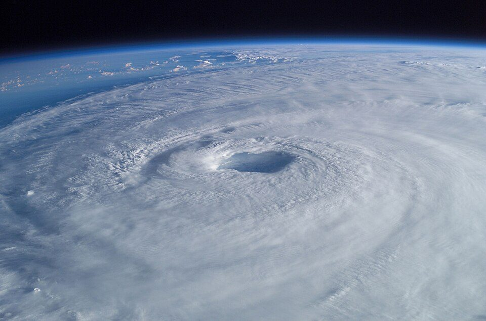

Tormentas, huracanes y tornados
Rayos cinco veces más calientes que el Sol, huracanes del tamaño de un país y danas que descargan en horas la lluvia de un año.


En cada momento hay unas 2.000 tormentas activas en algún lugar de la Tierra. Son la forma que tiene la atmósfera de liberar energía: el calor y la humedad acumulados cerca del suelo suben con violencia y se descargan en forma de lluvia, viento y electricidad.
Rayos y truenos
Dentro de un cumulonimbo, las corrientes de aire hacen chocar granizos y cristales de hielo, que se cargan eléctricamente como un globo frotado en el pelo. Cuando la diferencia de carga es enorme, salta una chispa gigante: el rayo. Calienta el aire a unos 30.000 °C, cinco veces más que la superficie del Sol, y el aire se expande de golpe con un estallido: el trueno.
Como la luz llega casi al instante y el sonido viaja a unos 340 metros por segundo, si cuentas los segundos entre el relámpago y el trueno y los divides entre tres, sabrás a cuántos kilómetros está la tormenta.
En el mundo caen unos 44 rayos por segundo. El lugar con más rayos es el lago de Maracaibo, en Venezuela: el «relámpago del Catatumbo» ilumina el cielo unas 260 noches al año. El guarda forestal estadounidense Roy Sullivan sobrevivió a siete rayos.
Huracanes, tifones y ciclones
Son el mismo fenómeno con distintos nombres según el océano: huracán en el Atlántico y el Pacífico oriental, tifón en el Pacífico occidental y ciclón en el Índico. Nacen sobre mares tropicales con el agua a más de 26 °C, que les da energía. Pueden medir 500 km de diámetro y tienen en el centro un ojo en calma, rodeado por un muro de nubes con los vientos más fuertes.


La escala Saffir-Simpson los clasifica de 1 a 5 según el viento: la categoría 5 supera los 252 km/h. El huracán Patricia (2015) alcanzó los 345 km/h, el viento sostenido más fuerte medido. Sus nombres, alternando masculinos y femeninos, se eligen de listas de la Organización Meteorológica Mundial; los de los más destructivos, como Katrina, se retiran para siempre.
En el Mediterráneo se forman a veces tormentas con aspecto de huracán pequeño, los medicanes.
Tornados
Un tornado es una columna de aire que gira con violencia entre una nube de tormenta y el suelo. Mide de decenas a cientos de metros de ancho, pero sus vientos pueden superar los 400 km/h. Se clasifican con la escala Fujita mejorada, de EF0 a EF5. Estados Unidos registra más de 1.000 al año, sobre todo en el llamado «Callejón de los Tornados». En España se producen unas decenas al año, casi siempre débiles, en el litoral mediterráneo, Andalucía occidental y las Baleares.
Danas y gota fría
Una dana (depresión aislada en niveles altos) es una bolsa de aire muy frío en altura que se separa de la corriente general y se queda estancada. En otoño, cuando el Mediterráneo aún está muy caliente, puede provocar lluvias torrenciales: lo que popularmente se llamaba gota fría.
El 29 de octubre de 2024, una dana descargó en pocas horas más de 700 litros por metro cuadrado en algunos puntos de Valencia. Las crecidas de los barrancos, como el del Poyo, arrasaron decenas de municipios de l'Horta Sud y causaron más de 220 víctimas: la mayor catástrofe meteorológica de la historia reciente de España.
Granizo
Las piedras de granizo más grandes pueden superar los 20 cm y el kilo de peso. En España, en agosto de 2022, una granizada con piedras de más de 10 cm golpeó La Bisbal d'Empordà (Girona).
Vídeos para entenderlo mejor
- DESASTRES NATURALES 🌊🌋 Recopilación 💨⛈️ Huracán, sequía, tsunami, tormenta, terremoto...Smile and Learn - Español · 7,1 M visualizaciones
Los vídeos son de YouTube y de sus autores. Se cargan solo al pulsar sobre ellos. Ver todos los vídeos →